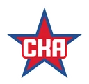

Амур — СКА: прогноз на матч 6 ноября 2026
КХЛ · пятница, 6 ноября · 12:00 МСК · {'id': 311, 'capacity': 7100, 'phone': '+7 (4212) 31-41-67', 'website': 'http://www.platinumarena.ru/', 'name': 'СЗК «Платинум Арена»', 'address': '680013, Хабаровский край, г. Хабаровск, ул. Дикопольцева, д. 12', 'city': 'Хабаровск', 'image': 'https://www.khl.ru/images/arenas/30/1.jpg', 'geo': {'lat': 48.48402, 'long': 135.085733}}
Амур
—
СКАПрогноз зашёлСчёт 2:3
Тотал меньше 5,5 в основное время
1,69
Линия на основное время
П12,50
Х3,59
П22,55
Форма команд
Амур
- В01.11в гостях — Адмирал5:2
- П30.10в гостях — Ак Барс1:3
- П28.10в гостях — Динамо Москва1:2
СКА
- П04.11в гостях — Адмирал0:4
- В02.11в гостях — Ак Барс4:3
- П27.10дома — Торпедо3:4